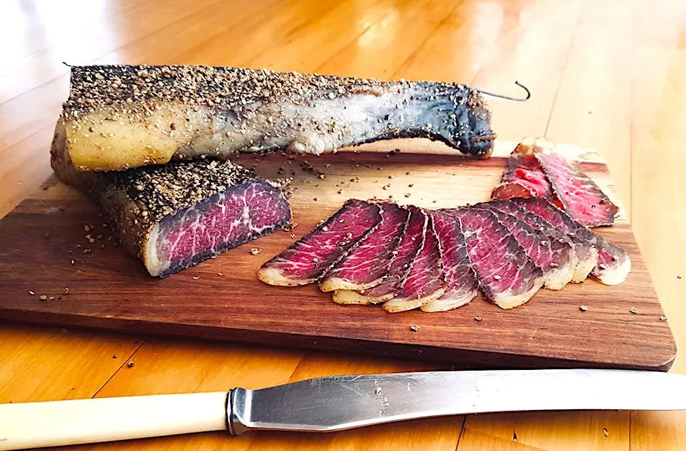

Biltong

Dried meat snack
Biltong is a form of dried, cured meat which originated in Southern African countries. Various types of meat are used to produce it
Ingredients
- Beef cut
- Salt and vinegar
- Spices and coriander
Steps
- Dry meat with paper towel
- Add together vinegar, salt and spices
- Hang to dry in biltong cabinet